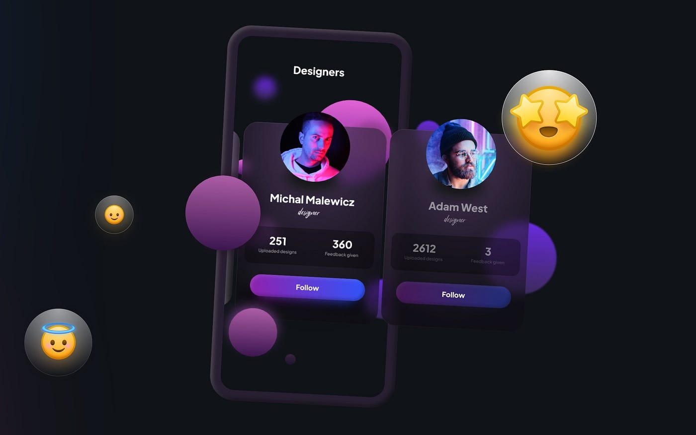
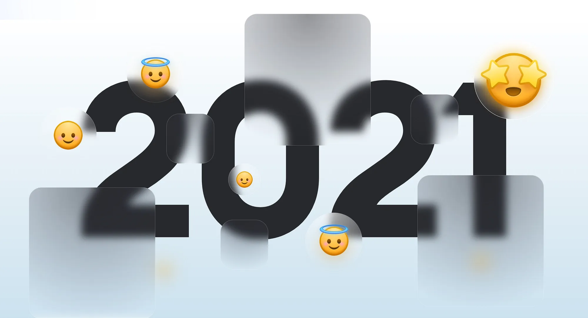
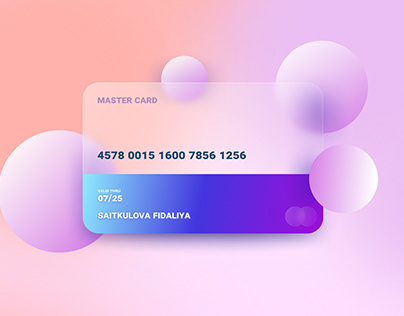
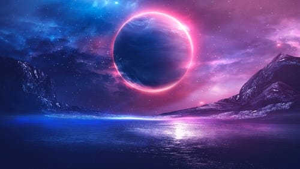
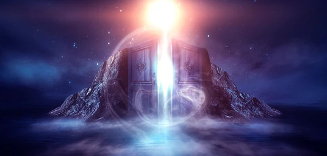
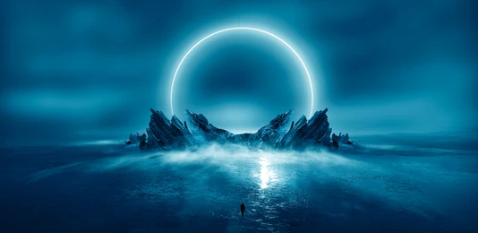

Malewicz is a small indie UI designer, known to help coin the term, "Glassmorphism", an aesthetic similar to Frutiger Aero. The style is often soft in color scheme, mostly focuses in transparency to adapt to any background
  An artist who provide illustrations in Shutterstock. Stendal's works have a large focus on celestial imagery, whether they are sci-fi or fantasy.
  
A digital artist well-known for their works having a focus
on outer space. Despite my
nyctophobia, I always have enjoyed the beauty of space. Quaz's
works help replicate the beauty of space, despite the scenes
being fictional.
Fun fact: I enjoyed the first image so much,